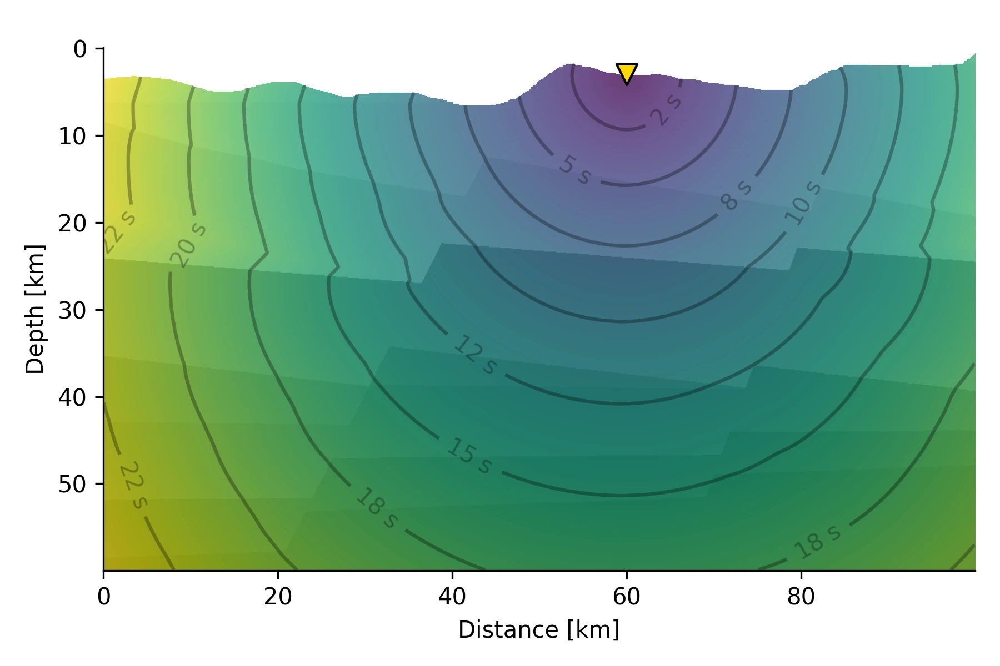
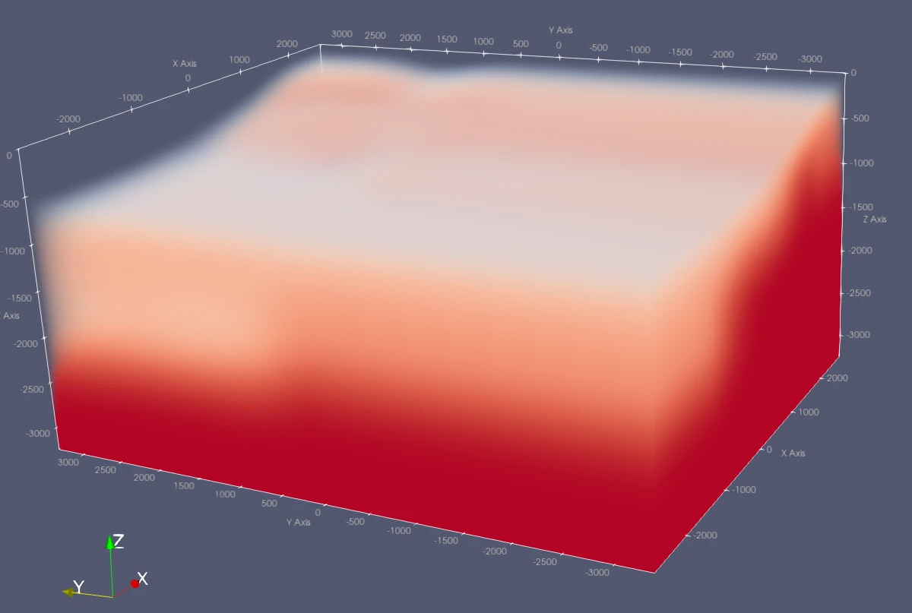

Ray Tracers
The calculation of seismic travel times is a cornerstone for the migration and stacking approach. Qseek supports different ray tracers for travel time calculation, which can be adapted for different geological settings.
Constant Velocity
The constant velocity models is trivial and follows:
This module is used for simple use cases and cross-referencing testing.
ConstantVelocityTracer Module
Travel time tracer with a constant velocity.
1D Layered Model
Calculation of travel times in 1D layered media is based on the Pyrocko Cake ray tracer.
 Pyrocko Cake 1D ray tracer for travel time calculation in 1D layered media
Pyrocko Cake 1D ray tracer for travel time calculation in 1D layered media
CakeTracer Module
Travel time ray tracer for 1D layered earth models.
phases-
Dictionary of phases and timings to calculate.
earthmodel-
Earth model to calculate travel times for.
trim_earth_model_depth:True-
Trim earth model to max depth of the octree.
lut_cache_size-
Size of the LUT cache. Default is
2G.
{
"tracer": "CakeTracer",
"phases": {
"cake:P": {
"definition": "P,p"
},
"cake:S": {
"definition": "S,s"
}
},
"earthmodel": {
"filename": "/home/runner/.cache/qseek/velocity_models/default.nd",
"format": "nd",
"crust2_profile": ""
},
"trim_earth_model_depth": true,
"lut_cache_size": 2147483648
}
3D Fast Marching
We implement the fast marching method for calculating first arrivals of waves in 3D volumes. Currently three different 3D velocity models are supported:
- Import NonLinLoc 3D velocity model
- 1D layered model 🥞
- Constant velocity, mainly for testing purposes 🥼
 Conceptual 2D visualisation for seismic traveltimes calculation in heterogenous media using the fast-marching method for the Eikonal solution is presented. Traveltimes from the receiving station at the surface (indicated by a yellow triangle) towards the subsurface grid are calculated, resulting in station-specifig traveltimes for all potential source locations simultaneously.
Traceback (most recent call last):
File "/opt/hostedtoolcache/Python/3.11.10/x64/lib/python3.11/site-packages/markdown_exec/formatters/python.py", line 71, in _run_python
exec_python(code, code_block_id, exec_globals)
File "/opt/hostedtoolcache/Python/3.11.10/x64/lib/python3.11/site-packages/markdown_exec/formatters/_exec_python.py", line 8, in exec_python
exec(compiled, exec_globals) # noqa: S102
^^^^^^^^^^^^^^^^^^^^^^^^^^^^
File "<code block: n7>", line 2, in <module>
from qseek.insights.tracers.fast_marching import FastMarchingTracer
ModuleNotFoundError: No module named 'qseek.insights'
Visualizing 3D Models
For quality check, all 3D velocity models are exported to vtk/ folder as .vti files. Use ParaView to inspect and explore the velocity models.
 Seismic velocity model of the Utah FORGE testbed site, visualized in ParaView.